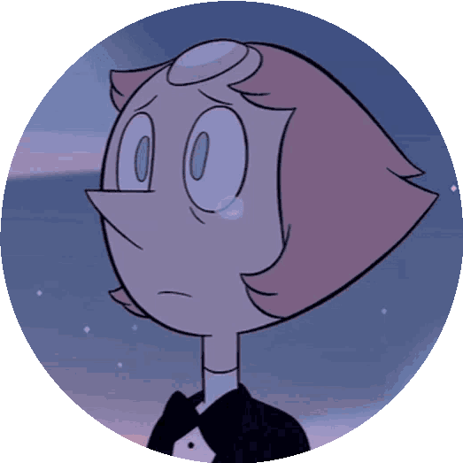

Primeira Situação
Em seu perfeito e bem arrumado quarto, Pérola relembra suas tragédias de guerra, onde não pode defender sua querida e amada líder, Rose Quartz. Neste momento, seu quarto sente o efeito da pedra da Rose alterando seu entorno e a levando de volta pro cenário da batalha e a criação da imagem deteriorada e mórbida de Rose. Então aí, Pérola decide:
